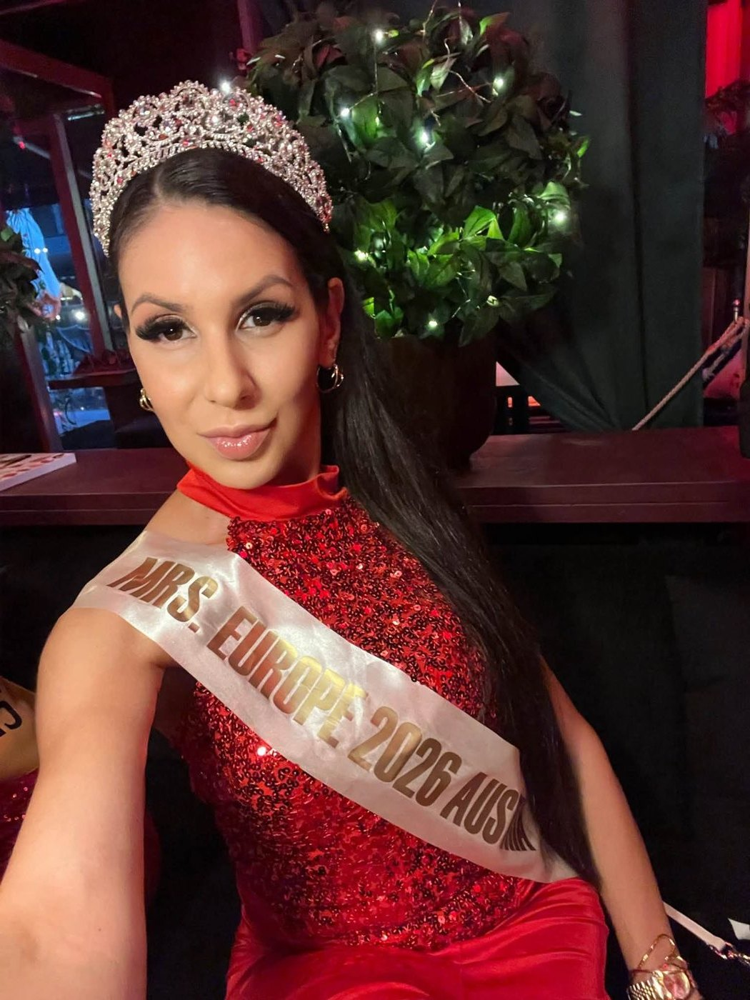
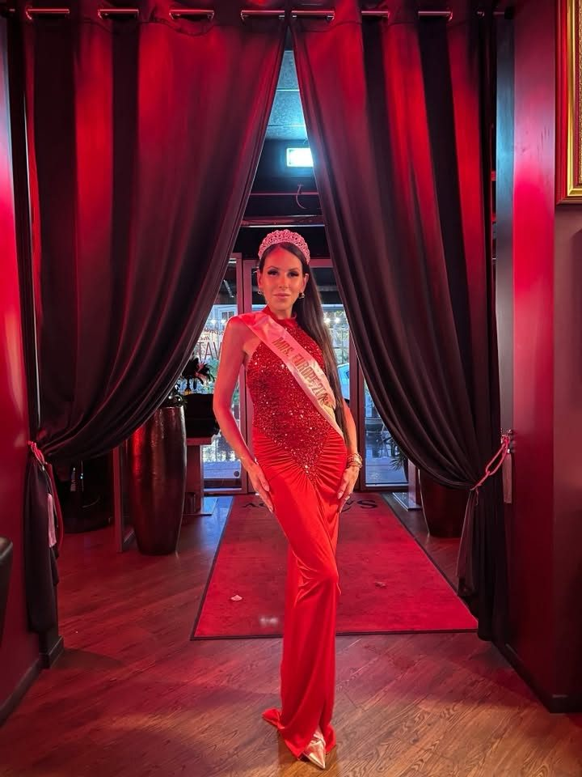
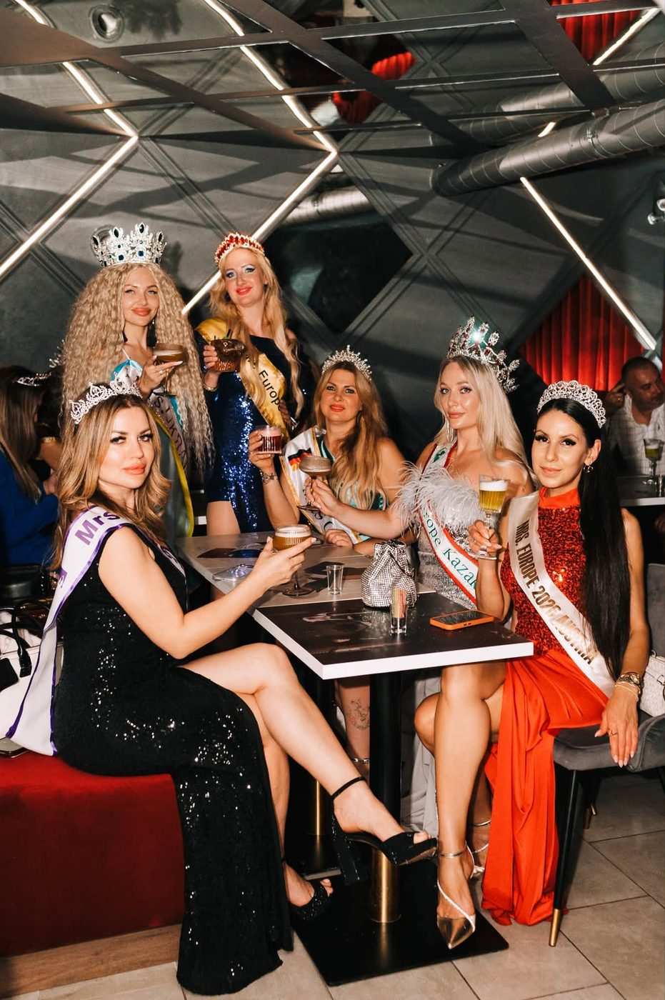

Диана Филипова — Сфера 360°
Империя от блясък и изкуството на короната
Диана Филипова е дизайнер, модел и създателка на модната марка FASHIONWAY, с присъствие на подиумите на Виена, Дубай и Милано. През септември 2026 г. тя представя Австрия като Mrs. Austria на Mrs. Europe 2026 в Талин, Естония, и завоюва специалната титла Mrs. Europe First Lady 2026.


